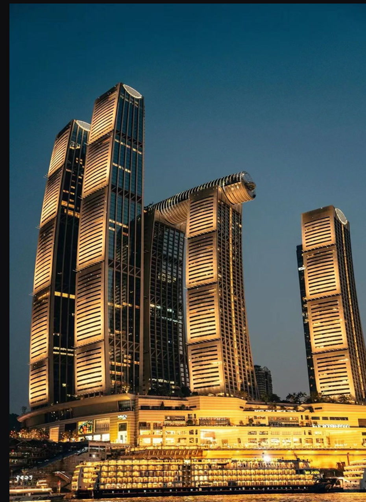

01 · FEATURED PROJECT2026
企业 AI
工作台
多角色 Agent 协作平台，连接案件数据抓取、两轮判断、分派与台账回写。将复杂的业务路径组织成可追踪、可复核的执行链路。
从 AI 应用到动态影像，
把复杂想法变成清晰、有感知的作品。

技术解决问题，
视觉创造感受。
从业务流程到可运行的 Agent。关注的不只是功能，还有交付后的可用性、可追踪性和协作效率。
多角色 Agent 协作平台，连接案件数据抓取、两轮判断、分派与台账回写。将复杂的业务路径组织成可追踪、可复核的执行链路。
五步流水线串联案件读取、研判、分派与回写。
梳理从合同、报建、施工到结算的业务链路与 Agent 场景。
视频既是表达形式，也是理解复杂概念的入口。这里收录 AI 主题短片、动态演示与项目记录。
用竖屏节奏解释数字员工的能力与工作方式。
用动态节点呈现输入、处理与输出的完整过程。
30 秒精简版本，聚焦清晰的信息传递。
横屏长版项目记录，呈现功能与使用路径。
围绕实际操作展开产品功能演示。
以动态图形解释智能体之间的连接与协作。
围绕 AI 协作者的实际工作场景创作。
摄影和新媒体运营训练了我对画面、节奏和受众的敏感度，也让我更在意产品被理解的方式。
从 0 到 1 完成账号与内容矩阵搭建。累计浏览量 100W+，转化率提升 30%。
重庆与南京的建筑、光线和城市表情。
棚拍与自然光，寻找人物真实的情绪。
我关注 AI 技术如何进入真实业务，也相信好的表达能让复杂内容更容易被理解。大学期间学习新媒体与影视制作，后续在企业新媒体运营与 Agent 项目中积累了从策划、搭建到交付的完整经验。
AI 应用、视频内容、视觉项目与工作机会，欢迎联系。
邮箱：2832252776@qq.com · 微信：19100240919